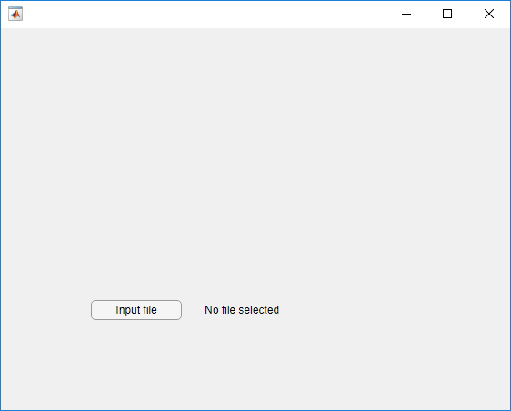

Write Tests That Use App Testing and Mocking Frameworks
This example shows how to write tests that use the app testing framework and the mocking framework. The app contains a file selection dialog box and a label indicating the selected file. To test the app programmatically, use a mock object to define the behavior of the file selector.
Create App
Create the launchApp app in your current
folder. The app allows a user to select an input file and displays the name of
the file in the app. The file selection dialog box is a blocking modal dialog
box that waits for user input.
function app = launchApp f = uifigure; button = uibutton(f,"Text","Input file"); button.ButtonPushedFcn = @(src,event) pickFile; label = uilabel(f,"Text","No file selected"); label.Position(1) = button.Position(1) + button.Position(3) + 25; label.Position(3) = 200; % Add components to app app.UIFigure = f; app.Button = button; app.Label = label; function file = pickFile [file,~,status] = uigetfile("*.*"); if status label.Text = file; end end end
To explore the properties of the app prior to testing, call the
launchApp function at the command prompt. This step
is not necessary for the tests, but it is helpful to explore the properties
used by the app tests. For example, use app.Button to
access the Input file button within the app.
app = launchApp; app.Button
ans =
Button (Input file) with properties:
Text: 'Input file'
Icon: ''
ButtonPushedFcn: @(src,event)pickFile
Position: [100 100 100 22]
Show all properties
Test App with Manual Intervention
Create the LaunchAppTest test class
without using mocks. The test requires that the file
input.txt exists in your current folder. If it does not
exist, create it. The test presses the Input file button
programmatically and verifies that the label matches
'input.txt'. You must manually select the file.
classdef LaunchAppTest < matlab.uitest.TestCase properties Filename = 'input.txt' end methods(TestClassSetup) function checkFile(testCase) import matlab.unittest.constraints.IsFile testCase.assertThat(testCase.Filename,IsFile) end end methods (Test) function testInput(testCase) app = launchApp; testCase.addTeardown(@close,app.UIFigure) testCase.press(app.Button) testCase.verifyEqual(app.Label.Text,testCase.Filename) end end end
Run the test. When the file selection dialog box appears, select
input.txt to allow MATLAB to proceed with the test.
Selecting any other file results in a test failure.
runtests("LaunchAppTest");Running LaunchAppTest . Done LaunchAppTest __________
Create Fully Automated Tests
To test the app without manual intervention, use the mocking framework. Modify the app to accept a file-choosing service instead of implementing it in the app (dependency injection).
Create a FileChooser service with an
Abstract method that implements the file selection
functionality.
classdef FileChooser % Interface to choose a file methods (Abstract) [file,folder,status] = chooseFile(chooser,varargin) end end
Create a default FileChooser service that uses the
uigetfile function for file selection.
classdef DefaultFileChooser < FileChooser methods function [file,folder,status] = chooseFile(~,varargin) [file,folder,status] = uigetfile(varargin{:}); end end end
Change the app to accept an optional FileChooser
object. When called with no inputs, the app uses an instance of
DefaultFileChooser.
function app = launchApp(fileChooser) arguments fileChooser (1,1) FileChooser = DefaultFileChooser end f = uifigure; button = uibutton(f,"Text","Input file"); button.ButtonPushedFcn = @(src,event) pickFile(fileChooser); label = uilabel(f,"Text","No file selected"); label.Position(1) = button.Position(1) + button.Position(3) + 25; label.Position(3) = 200; % Add components to app app.UIFigure = f; app.Button = button; app.Label = label; function file = pickFile(fileChooser) [file,~,status] = fileChooser.chooseFile("*.*"); if status label.Text = file; end end end
Make these modifications to LaunchAppTest:
Change the class to inherit from both
matlab.uitest.TestCaseandmatlab.mock.TestCase.Remove the
propertiesblock and theTestClassSetupmethodsblock. Because the mock defines the output of thechooseFilemethod call, the tests do not rely on the existence of an external file.Change the
testInputmethod to perform these actions:Create a mock object from
FileChooser.Define mock behavior such that when the
chooseFilemethod is called with the input"*.*", the outputs are the filename ('input.txt'), the current folder, and a selected filter index of1. These outputs are analogous to the outputs from theuigetfilefunction.Launch the app with the
mockChooserobject.Press the button and verify the name of the selected file. These actions are the same as in the original test, but the mock assigns the output values, so you do not need to interact with the app to continue testing.
To test the Cancel button, add a
Testmethod namedtestCancelto perform these actions:Create a mock object from
FileChooser.Define mock behavior such that when the
chooseFilemethod is called with the input"*.*", the outputs are the filename ('input.txt'), the current folder, and a selected filter index of0. These outputs are analogous to the outputs from theuigetfilefunction if a user selects a file and then chooses to cancel.Launch the app with the
mockChooserobject.Press the button and verify that the test calls the
chooseFilemethod and that the label indicates that no file was selected.
classdef LaunchAppTest < matlab.uitest.TestCase & matlab.mock.TestCase methods (Test) function testInput(testCase) import matlab.mock.actions.AssignOutputs filename = 'input.txt'; [mockChooser,behavior] = testCase.createMock(?FileChooser); when(behavior.chooseFile("*.*"),AssignOutputs(filename,pwd,1)) app = launchApp(mockChooser); testCase.addTeardown(@close,app.UIFigure) testCase.press(app.Button) testCase.verifyEqual(app.Label.Text,filename) end function testCancel(testCase) import matlab.mock.actions.AssignOutputs [mockChooser,behavior] = testCase.createMock(?FileChooser); when(behavior.chooseFile("*.*"),AssignOutputs('input.txt',pwd,0)) app = launchApp(mockChooser); testCase.addTeardown(@close,app.UIFigure) testCase.press(app.Button) testCase.verifyCalled(behavior.chooseFile("*.*")) testCase.verifyEqual(app.Label.Text,'No file selected') end end end
Run the tests. The tests run to completion without manual file selection.
runtests("LaunchAppTest");Running LaunchAppTest .. Done LaunchAppTest __________